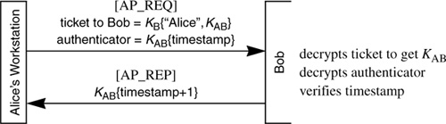

Networking Security Networking Security Networking Security Security Networking Security Networking Security Networking Charlie Kaufman Radia Perlman Mike Speciner Prentice Hall Network Security: Private Communication in a Public World, Second Edition
13.4. Logging Into the Network
By way of introduction, let's look at the steps that take place as Alice uses the network. She'll expect the login procedure to be pretty much the same as for logging into an operating system. First, the workstation prompts Alice for a name and a password.
13.4.1. Obtaining a Session Key and TGT
Alice types her account name and password at the workstation. The workstation sends a message to the KDC, in the clear (unencrypted), which gives Alice's account name. On receipt of the request, the KDC returns credentials to the KDC, encrypted with Alice's master key. The credentials consist of
a session key SA (a secret key to be used during the login session). a ticket-granting ticket (TGT). The TGT contains the session key, the user's name, and an expiration time, encrypted with KKDC. Because it is encrypted with the KDC's master key, the TGT is an unintelligible bunch of bits to anyone other than the KDC.
These credentials are sent back to the workstation encrypted with Alice's master key, KA. Note that the information in the TGT is therefore doubly encrypted when transmitted by the KDCÂfirst with KKDC and then with KA. Kerberos V4 is sometimes criticized for this minor performance suboptimality, since encrypting the already-encrypted TGT offers no security benefit.
The workstation converts the password Alice types into a DES key. When the workstation receives the credentials, it attempts to decrypt them using this DES key. If this decryption succeeds (which it will if Alice typed her password correctly), then the workstation discards Alice's master key (the key derived from her password), retaining instead the TGT and the session key.
Kerberos documentation refers to the request sent by the workstation to the KDC as a KRB_AS_REQ, for Kerberos Authentication Server Request. We'll call it AS_REQ. The message in which the KDC returns the session key and TGT is known in the Kerberos documentation as a KRB_AS_REP, for Kerberos Authentication Service Reply. We'll call it AS_REP.
Actually, Kerberos V4 does not prompt the user for her password until after the workstation has received the credentials from the KDC. This is because Kerberos V4 was very serious in following the generally good security rule of having the workstation know the user's password for the minimum time possible. Waiting the few seconds to get the credentials before asking the user for the password really doesn't enhance security significantly, and in fact V5 has the user type the password before the workstation sends the AS_REQ. The reason V5 changed the order was that V5 requires the workstation to prove it knows the user's password before it sends the credentials, which makes it less easy to obtain a quantity with which to do off-line password guessing. An eavesdropper will still be able to do off-line password guessing with V5, but in V4 all you have to do is send the name Alice to the KDC and it will return a quantity with which you can do password guessing. This is likely to be easier than eavesdropping.
What is the purpose of the TGT? When Alice needs to access a remote resource, her workstation sends the TGT to the KDC along with a request for a ticket to the resource's node. The TGT contains the information the KDC needs about Alice's login session (session key, Alice's name, expiration time,...). This allows the KDC to operate without having any volatile data; it has a largely static database, and for each request it sends a response and then forgets that it happened. This offers a number of operational advantages, like making it easy to replicate the KDC and not having to maintain state across crashes.
An interesting variant might be to have the workstation generate the TGT (see Homework Problem 1).
13.4.2. Alice Asks to Talk to a Remote Node
Suppose that after logging in as described above, Alice types a command that requires access to a remote node (like rlogin Bob, which logs Alice into Bob). The workstation sends to the KDC the TGT, the name Bob, and an authenticator which proves that the workstation knows the session key. The authenticator consists of the time of day encrypted with the session key (in this case SA). This request is known in the Kerberos documentation as a KRB_TGS_REQ, and the reply is known as KRB_TGS_REP; we'll call them TGS_REQ and TGS_REP. The TGS_REP contains a ticket to Bob and KAB (the session key to be shared by Alice and Bob), encrypted with SA (the session key to the KDC).
Because of the use of authenticators it is necessary for resources on the network to keep reasonably synchronized time. The times can be off by some amount. The allowable time skew is independently set at each server, and therefore some servers may be configured to be fussier than others about times being close. The allowed time skew is usually set to be on the order of five minutes on the assumption that it is possible to get computers' clocks to be accurate within five minutes without undue administrative burden. In practice, that assumption has turned out to be more problematic than expected. Distributed time services, once deployed, make much tighter synchronization straightforward.
It turns out that there is no security or functionality gained by having Kerberos require an authenticator when Alice's workstation requests a ticket to Bob. If someone who didn't know the session key transmitted the TGT and the name Bob to the KDC, the KDC would return information encrypted with SA, which would be of no use to someone who didn't know Alice's session key. The reason the designers of Kerberos did it this way is to make the protocol for talking to the Ticket-Granting Service of the KDC be the same as for talking to other resources. When talking to most resources other than the KDC, the authenticator does provide security, because it prevents the replay of old requests and authenticates the sender (which is important if the reply is unencrypted).
The KDC decrypts the TGT (with KKDC) and discovers the session key SA. It also checks the expiration time in the TGT. If the TGT is valid, the KDC constructs a new key KAB, for use in talking between Alice and Bob, and constructs a ticket, which consists of the newly generated key KAB, the name Alice, and an expiration time, all encrypted with Bob's master key, KB. The KDC sends the ticket, along with the name Bob and KAB, to the workstation. Again this information must be encrypted, and it is encrypted with SA. On receipt, the workstation decrypts the information using SA.
Now the workstation sends a request to Bob. In the Kerberos documentation this request is called a KRB_AP_REQ, for application request, which we'll call AP_REQ. It consists of the ticket and an authenticator (in this case the time encrypted with the session key KAB). The reply from Bob is known in Kerberos as KRB_AP_REP, and we'll call it AP_REP. Bob decrypts the ticket and discovers the key KAB and the name Alice. Bob now assumes that anyone with knowledge of KAB is acting on Alice's behalf. Then Bob decrypts the authenticator to know that the party to which he is speaking does indeed know the session key KAB. He checks that the time in the decrypted authenticator is close to current (within five minutes) to ensure that this is not a replay of some earlier request.
To make sure it is not a replay of a request recent enough to look current given the time skew, Bob should keep all timestamps he has received recently, say in the last five minutes (a parameter set appropriately for the maximum allowable time skew) and check that each received timestamp from a given source is different from any of the stored values. Any authenticator older than five minutes (or whatever the value of the maximum allowable time skew) would be rejected anyway, so Bob need not remember values older than 5 minutes. Kerberos V4 doesn't bother saving timestamps. Saving timestamps doesn't help anyway if Bob is a replicated service in which all the instances of Bob use the same master key. The threat of an eavesdropper replaying the authenticator Alice sent to one instance of Bob to a different instance of Bob could have been avoided if Kerberos had done something like put the network layer address of the instance of Bob in the authenticator.

To provide mutual authentication, Bob adds one to the time he decrypted from the authenticator, reencrypts that with KAB and sends it back. Alice's workstation is now reassured that it is talking to Bob, since the party at the other side was able to decrypt the ticket, which meant he knew KAB, which was encrypted with KB.
Thereafter, depending on the application, messages between Alice and Bob may be unprotected, integrity-protected, or encrypted and integrity-protected. Some applications always use the same Kerberos protection (authentication only, data integrity protection, or data encryption plus integrity protection). Others make it optional (a switch setting when calling the application). The decision is a security vs. performance trade-off when using Kerberos.
|